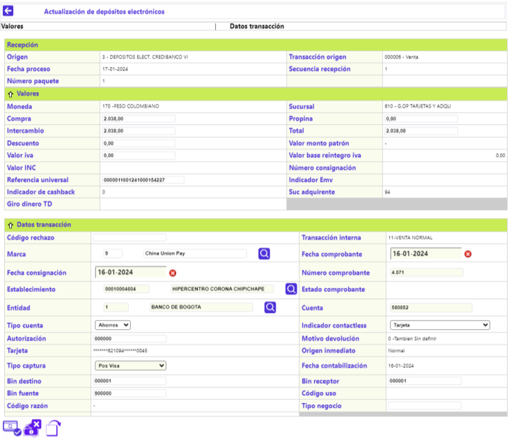
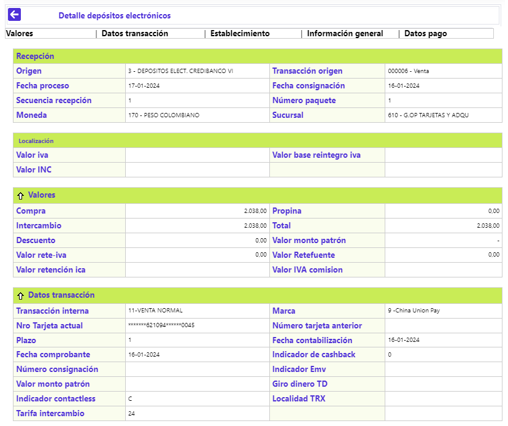
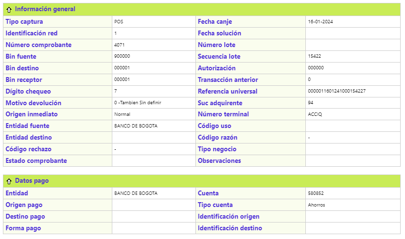

Depósitos electrónicos
A este formulario llegan los registros de los orígenes de transacciones 3 - DEPOSITOS ELECT. CREDIBANCO VI y 10 - DEPOSITOS ELECT MASTER CARD, que fueron rechazados por los procesos de validación correspondientes y, a partir de allí, acorde con las causales, analizar y gestionar la solución de este movimiento pendiente. El formulario contiene los enlaces: Actualizar, Detalle, y un filtro de búsqueda.
Filtro: Se pueden realizar consultas a través de las siguientes opciones:

Fecha proceso |
Este campo permite ingresar cualquier dato válido con el formato YYYY-MM-DD. |
Origen |
Lista de valores que permite ingresar cualquier valor numérico de máximo 3 dígitos. |
Tarjeta |
Este campo permite ingresar cualquier valor alfanumérico de 23 caracteres. |
Transacción origen |
Lista de valores que permite ingresar cualquier valor alfanumérico de máximo 6 caracteres. El filtro de Transacción origen solo tendrá información para consulta cuando el usuario haya diligenciado el Origen, de lo contrario, el sistema no permitirá ningún dato al no tener como armar la lista de valores. |
Total |
Para este campo el sistema admite cualquier dato numérico de máximo 14 dígitos, 12 enteros y dos decimales. |
Fecha comprobante |
Este campo permite ingresar cualquier dato válido con el formato YYYY-MM-DD. |
Si bien el bloque inferior del formulario muestra todos los registros de Depósitos electrónicos pendientes que existan en la base de datos, luego de definir los criterios de la consulta y activar el botón Buscar, el sistema retorna, únicamente, aquellos que coincidan con los criterios utilizados:

Actualizar: Si el usuario invoca ese enlace, se despliega un formulario en el que, el contenido de varios de sus campos puede ser modificado, con el propósito de solucionar las causales por las que fue rechazado. Adicionalmente, cuenta con una serie de botones especiales: Aplicar movimiento, Enviar a castigo y Retirar movimiento.

Descripción de campos – Actualización de depósitos electrónicos
Recepción
Origen |
Campos que despliegan tanto el código como el nombre del origen o fuente de transacciones dentro del que se incluía la transacción enviada a movimiento pendiente. |
Transacción origen |
Despliega tanto el código como el nombre asociado a cada tipo o clase de transacción enviada a pendiente contenida dentro del archivo del movimiento con base en la codificación determinada por las franquicias y parametrizada mediante la opción Orígenes de transacciones del Núcleo. |
Fecha proceso |
Campo con formato YYYY-MM-DD ilustra la fecha en que se efectuó el proceso del archivo en que viajó la transacción enviada a Movimiento pendiente. |
Fecha consignación |
Contiene la fecha en formato YYYY-MM-DD en la que el establecimiento realizó la consignación de los comprobantes o ingresó el depósito electrónico con la transacción de consumo o utilización. |
Secuencia recepción |
Campo de salida que ilustra el número con el que se identifica el cargue de archivos o integración del movimiento ingresado por un mismo origen para una misma fecha de proceso. |
Número paquete |
Campo que ilustra el número del paquete que identifica el movimiento por clase o tipo de transacción, lo que facilita su ubicación en caso de ser necesario. |
Valores
Moneda |
Despliega el nombre oficial de la Moneda que identifica la moneda original de la transacción. |
Sucursal |
Campo de salida que despliega el nombre de la oficina por medio de la que ingresó el movimiento. |
Compra |
Dato modificable, muestra el monto de la transacción de utilización o consumo sin incluir el valor de la propina concedida por el tarjetahabiente. |
Propinas |
Dato modificable, refleja el monto de la propina otorgada por el cliente. |
Intercambio |
Dato modificable, muestra el valor neto de la transacción, esto es, valor del consumo o utilización más valor propina menos valor descuento. |
Total |
Dato modificable, despliega el valor bruto de la transacción, esto es, valor del consumo o utilización más valor propina |
Descuento |
Dato modificable, contiene el valor deducido al establecimiento al liquidarle la comisión o descuento sobre el valor del consumo realizado por el cliente. |
Valor monto patrón |
Despliega el nombre oficial de la Moneda que identifica la moneda original de la transacción. |
Valor iva |
Dato modificable, refleja el valor cobrado al cliente por concepto de impuesto al valor agregado. |
Valor base reintegro iva |
Este campo despliega el valor que sirve como base para el cálculo del reintegro de los 2 puntos de IVA sobre compras y que corresponde al valor de los bienes y/o servicios gravados con una tarifa del 19%; a partir del 2005 también quedaron incluidos aquellos que estén gravados con un IVA del 10%. |
Valor INC |
Refleja el valor cobrado al cliente por concepto de impuesto nacional al consumo. |
Número consignación |
Corresponde al número del comprobante de consignación al cual pertenece el pagaré de la utilización. |
Referencia universal |
Dato modificable, número construido y validado por el sistema tanto para el canje enviado como para el recibido, identifica de manera exclusiva a cada transacción dentro de todo el universo transaccional. |
Indicador Emv |
Indica si la transacción fue realizada con el chip de la tarjeta. |
Indicador de cashback |
Cuando el establecimiento en el cual se realizó la transacción posee esta característica indica que el valor registrado como Propina corresponde a un Avance hecho por el cliente en dicho establecimiento. Los posibles valores del campo son "0" en caso de no tener cashback ó "1" cuando el establecimiento si tiene esta condición. |
Suc adquirente |
Despliega el código que permite identificar la sucursal de la entidad adquirente o receptora del movimiento |
Giro Dinero TD |
Corresponde al valor de una transacción crédito efectuada a una tarjeta débito. |
Datos transacción
Código rechazo |
Despliega el código asignado por el procesador para identificar la causa o motivo, por la que un registro del archivo de canje enviado le es devuelto a la entidad. |
Transacción interna |
Contiene el nombre con el que se identifica internamente la transacción, es el mismo que aparecerá en el extracto una vez sea corregida y aplicada, con base en lo parametrizado en la opción Transacciones por entidad del Núcleo. |
Marca |
Dato que indica el nombre de la franquicia a la que pertenece el plástico con el que se realizó la transacción. |
Fecha comprobante |
Campo modificable, muestra la fecha física del comprobante de consumo o utilización en formato DD-MM-AAAA, dispone de funcionalidad de un calendario. |
Fecha consignación |
Campo modificable, contiene la fecha en formato DD-MM-AAAA en la que el establecimiento realizó la consignación de los comprobantes o ingresó el depósito electrónico con la transacción de consumo o utilización. |
Número comprobante |
Campo modificable corresponde al número de recibo o comprobante de venta o de la utilización. |
Establecimiento |
Dato modificable, despliega el código único que identifica el establecimiento y el nombre del mismo, en el que se realizó la utilización o consumo. |
Estado comprobante |
Informa si el comprobante ha sido solucionado con anterioridad y cuál fue dicha solución. |
Entidad |
Dato modificable, contiene tanto el código como el nombre de la entidad financiera receptora del movimiento. |
Cuenta |
Dato modificable, despliega el número de la cuenta de depósitos perteneciente al establecimiento de comercio. |
Tipo Cuenta |
Dato modificable, identifica la clase (corriente o ahorros) a la cual pertenece el número de cuenta del establecimiento. |
Indicador contactless |
Dato modificable, campo que indica la característica de contacless de la tarjeta débito con la que se realizó la transacción. |
Autorización |
Dato modificable, muestra el número de la autorización asignado a la transacción por el procesador o la entidad. |
Motivo devolución |
Campo que ilustra tanto el código como la descripción de la razón por la que la transacción fue devuelta. |
Tarjeta |
Reseña el número de la tarjeta, enmascarado, asociado inicialmente a la transacción, el cual puede ser erróneo o no pertenecer al sistema. |
Origen inmediato |
Aplica para las transacciones que al ingresar al sistema no pasaron directamente al movimiento diario, sino que han transitado por otras etapas o destinos del movimiento, permitiendo identificar la procedencia de las mismas. |
Tipo captura |
Dato modificable, campo que ilustra la manera como ingresó, por medio de su red, la transacción al sistema. Posee lista de valores tipo combo, el cual puede ser modificado como parte del proceso de solución del movimiento. |
Fecha contabilización |
Contiene la fecha en formato YYYY-MM-DD, en que se afectó contablemente los saldos del tarjetahabiente, usualmente es la misma fecha de proceso o canje. |
Bin destino |
Dato modificable, señala el prefijo o bin centro de proceso de la entidad emisora del plástico. |
Bin receptor |
Dato modificable, contiene el prefijo o bin centro de proceso de la entidad a través de la que ingresa la transacción. |
Bin fuente |
Dato modificable, contiene el mismo prefijo o bin receptor. |
Código uso |
Valor o identificador utilizado en los registros del movimiento de canje internacional. |
Código razón |
Valor o identificador utilizado en los registros del movimiento de canje internacional. |
Tipo negocio |
Dato modificable, despliega el nombre del principal servicio ofrecido por el establecimiento de comercio. |
Detalle: Al activar ese enlace se despliega el siguiente formulario, en el que ninguno de sus campos es modificable:


Botones especiales: La funcionalidad de cada uno de los siguientes botones, es la responsable de llevar a cabo la acción indicada.
|
Aplicar movimiento: Una vez modificado el o los datos erróneos o inconsistentes que permite el formulario, al activarse este botón, el sistema realiza nuevamente las validaciones a que haya lugar y, de ser exitosas, el registro sale de pendiente y se debe reflejar dentro del formulario Depósitos en Tesorería. |
|
|
Enviar a castigo: Último recurso del que dispone la entidad para "solucionar" una transacción que ha agotado todas las alternativas, esto es que no fue posible cargar al cliente por no haberla efectuado, no haberla reconocido o pagado la compañía de seguros, no haber logrado el pago ni mediante el proceso de contracargo ni comprobantes al cobro o de buena fe, en síntesis la entidad debe asumir esa pérdida. |
|
|
Retirar movimiento: Esta opción tiene un efecto contable, pues retira el movimiento de las cuentas contables que afectó. |